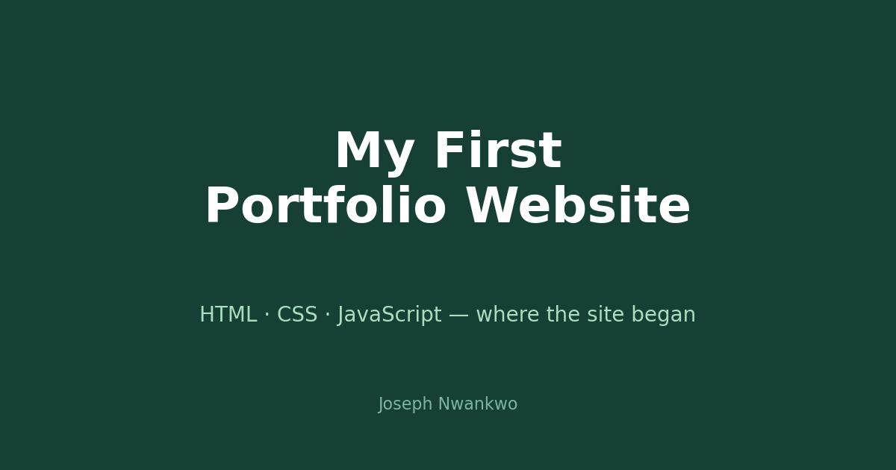

At a glance: HTML · CSS · JavaScript · multi-page portfolio with article template · the predecessor of josephnwankwo.com.
Why it mattered.
A portfolio is a data analyst's storefront. This first version got the fundamentals right: a homepage that says who I am, a work section, and an article template (single.html) for writing — the same structure the current site still uses.
What I learned.
Shipping beats polishing. Version one had rough edges, but it was live, and every limitation in it became a requirement for version two — cleaner design, better structure, real project write-ups. You can see its DNA in the current site.
Your first version exists to teach you what the second version should be.
What is next.
You are looking at it — this site. And the project write-ups keep coming.